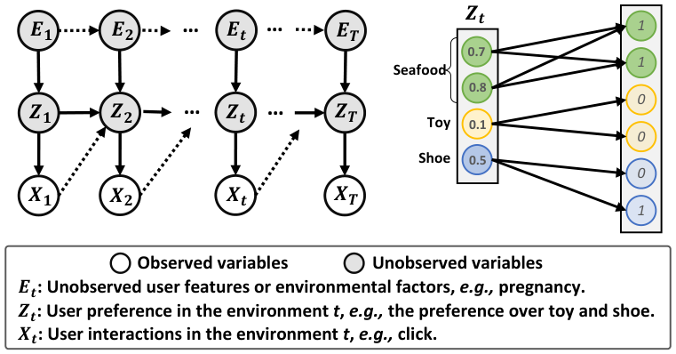

Causal Disentangled Recommendation Against User Preference Shifts (因果解耦推荐：应对用户偏好漂移)
- 会议/期刊: TOIS (Transactions on Information Systems)
- 作者与机构: Wenjie Wang, Xinyu Lin, Liuhui Wang, Fuli Feng, Yunshan Ma, Tat-Seng Chua；NUS、PKU、USTC
- 推荐链路定位: 全库排序 / 端到端协同过滤
- 研究方向: 去偏公平、可信隐私与工业架构 / 序列与会话推荐
- 论文原文: 论文原文链接
- 开源代码: 开源代码仓库链接
TL;DR (1分钟核心速览)
论文针对推荐系统在用户偏好漂移下的 OOD 泛化痛点：既有解耦推荐忽略跨环境时序漂移，序列模型又忽略偏好对交互的稀疏因果影响。作者将用户交互序列按时间划分为多个环境，提出 CDR：用时序 VAE推断未观测因素并迭代更新偏好，用两个可学习矩阵 \(\mathbf{W}_z,\mathbf{W}_x\) 解耦类别级稀疏影响，并以稀疏/方差正则优化。在 Yelp、Book、Electronics 的 Full-Ranking 协议下，CDR 的 Recall@10 较次优提升 19.46%/28.06%/26.86%。
Background & Motivation (背景与核心矛盾)
- 主流范式: 解耦推荐（如 MacridVAE）通过独立隐因子提升鲁棒性；序列推荐（ACVAE、CauseRec 等）通过时序建模捕捉兴趣演化。
- 前人局限: 解耦方法通常在 IID 数据上学习表征，忽略 \(Z_{t-1}\to Z_t\)的跨环境漂移；序列模型侧重 next-item，忽略\(Z_t\to X_t\) 的稀疏影响——部分偏好漂移只影响少量类别交互。
- 核心洞察 (Key Insight): 作者抽象出因果图 \(E_t\to Z_t\to X_t\)与\(Z_{t-1}\to Z_t\)：未观测因素\(E_t\)（如怀孕、热点事件）导致偏好漂移；类别级偏好稀疏地作用于对应物品交互。环境按时间切分后，Amazon Book 中相邻环境交互类目余弦相似度持续下降，验证分布漂移。
- 本文切入点: 用时序 VAE 从 \(X_t\)反推\(E_t\)并更新\(Z_t\)；用软掩码矩阵学习\(Z_t\to X_t\) 的稀疏结构；多环境梯度方差正则平衡各环境优化。

图2：多环境交互生成的因果图，\(E_t\)经\(Z_t\)影响\(X_t\)，且\(Z_{t-1}\to Z_t\) 表示偏好漂移。
Method (核心方法设计)
1. 整体框架 (Overall Architecture)
CDR 将每个用户交互序列按交互数等分为 \(T\)个时间环境。每个环境\(t\)中，编码器\(g_\phi(\boldsymbol{x}_t)\)从观测交互推断未观测因素\(\boldsymbol{e}_t\)；解码器\(f_{\theta_1}(\boldsymbol{e}_t,\boldsymbol{z}_{t-1})\)更新当前偏好\(\boldsymbol{z}_t\)；再由稀疏解耦模块\(f_{\theta_2}(\boldsymbol{z}_t)\)输出全物品交互概率。训练时以 ELBO、稀疏\(L_0\)正则和跨环境梯度方差正则联合优化；推理时用最新偏好\(\boldsymbol{z}_T\)做全库排序。核心计算在\(T\)个环境上循环，\(\mathbf{W}_z,\mathbf{W}_x\) 跨环境共享。
flowchart TD
A["用户交互序列 x_{1:T}，按时间等分为 T 个环境"] --> B["编码器 q(e_t|x_t)：推断未观测因素 e_t"]
B --> C["时序解码 f_{θ1}(e_t,z_{t-1})：更新偏好 z_t"]
C --> D["稀疏解耦 f_{θ2}(z_t)=Σ_c W_x[:,c]⊙f_γ(W_z[:,c]⊙z_t)"]
D --> E["全库 softmax 打分与排序"]
C --> F["训练目标：ELBO + 稀疏L0 + 跨环境梯度方差正则"]2. 关键设计拆解 (Key Designs)
- 多环境时序 VAE（推断 \(E_t\)并建模漂移）：痛点在于\(E_t\)不可观测、漂移无监督。CDR 假设\(\boldsymbol{e}_t\sim\mathcal{N}(0,\mathbf{I}_K)\)，\(\boldsymbol{z}_t\sim\mathcal{N}(\boldsymbol{\mu}_{\theta_1}(\boldsymbol{e}_t,\boldsymbol{z}_{t-1}),\mathrm{diag}\{\boldsymbol{\sigma}^2_{\theta_1}(\cdot)\})\)，\(\boldsymbol{x}_t\sim\mathrm{Mult}(N_t,\pi(f_{\theta_2}(\boldsymbol{z}_t)))\)。编码器用变分推断估计\(q(\boldsymbol{e}_t|\boldsymbol{x}_t)\)，解码器以 MC 采样迭代\(Z_{t-1}\to Z_t\)；这使得\(Z_t\) 既有短期不变偏好，又能吸收跨环境漂移。
- 稀疏类别解耦（学习 \(Z_t\to X_t\)软结构）：若用普通 MLP，偏好对所有物品稠密影响，漂移会污染大量无关预测。CDR 引入\(\mathbf{W}_z\in\mathbb{R}^{H\times C}\)与\(\mathbf{W}_x\in\mathbb{R}^{I\times C}\)，经裁剪高斯与 softmax 软分配后计算\(f_{\theta_2}(\boldsymbol{z}_t)=\sum_{c=1}^{C}\mathbf{W}_x[:,c]\odot f_\gamma(\mathbf{W}_z[:,c]\odot\boldsymbol{z}_t)\)。类别级掩码让部分偏好只影响对应类目，漂移时仅少量交互受扰动，提升 OOD 鲁棒性。
- 训练目标、负采样与推理效率：总损失为 \(\mathcal{L}_u=\mathrm{ELBO}_u+\lambda_2(\|\mathbf{W}_z\|_0+\|\mathbf{W}_x\|_0)+\lambda_3\sum_t\|\nabla_\theta\mathcal{L}_{u,t}-\nabla_\theta\mathcal{L}_u\|^2\)。ELBO 用 KL 退火系数\(\lambda_1\)平衡拟合与解耦；方差项约束各环境梯度同步。训练采用全物品多项分布 softmax，无显式负采样；推理用\(\boldsymbol{z}_T\)全库打分，开销随\(T_i\) 线性增长。
Experimental Setup & Evaluation Protocol (实验设置与评估协议)
- 数据集与预处理:
| 数据集 | #Users | #Items | #Interactions | 密度 | 特征/场景说明 |
|---|---|---|---|---|---|
| Yelp | 11,622 | 9,095 | 487,000 | 0.004607 | 餐厅点评，保留 ≥20 交互用户/物品 |
| Book | 21,923 | 23,773 | 1,125,676 | 0.002159 | Amazon 图书评论，≥20 交互 |
| Electronics | 9,279 | 6,065 | 158,979 | 0.002825 | Amazon 电子产品，≥10 交互 |
评分 ≥4 视为正反馈；按用户交互时间排序后以 80%/10%/10% 划分训练/验证/测试（用户内时间顺序比例划分），测试段对应未来环境。 - 排名评测协议: 采用 Full-Ranking 全库未交互排序（all-ranking），报告 Recall@10/20 与 NDCG@10/20；训练端为全物品 softmax，无采样负例。 - 对比基线与超参设置: 覆盖 MF、LightGCN、MultiVAE、MacridVAE、DIB、COR、DIEN、MGS、DSSRec、ACVAE、CauseRec。CDR 隐维 \(K,H\)在 200–500 搜索，batch=500，lr=\(1e^{-4}\)，训练环境数\(T_t\)最佳为 3，推理\(T_i\)可增大；显著性用 one-sample t-test，\(p<0.05\)。
Key Experimental Results (实验关键数据)
1. 主实验对比 (Main Results)
| Method | Yelp R@10 | Yelp N@20 | Book R@10 | Book N@20 | Elec. R@10 | Elec. N@20 |
|---|---|---|---|---|---|---|
| MF | 0.0385 | 0.0365 | 0.0206 | 0.0193 | 0.0333 | 0.0243 |
| LightGCN | 0.0402 | 0.0390 | 0.0252 | 0.0233 | 0.0365 | 0.0246 |
| MacridVAE | 0.0442 | 0.0434 | 0.0409 | 0.0378 | 0.0424 | 0.0306 |
| COR | 0.0411 | 0.0392 | 0.0400 | 0.0385 | 0.0428 | 0.0289 |
| MGS | 0.0423 | 0.0409 | 0.0515 | 0.0532 | 0.0415 | 0.0285 |
| DSSRec | 0.0413 | 0.0400 | 0.0539 | 0.0534 | 0.0503 | 0.0343 |
| ACVAE | 0.0439 | 0.0432 | 0.0563 | 0.0576 | 0.0510 | 0.0359 |
| CauseRec | 0.0433 | 0.0417 | 0.0484 | 0.0482 | 0.0445 | 0.0309 |
| CDR | 0.0528* | 0.0518* | 0.0721* | 0.0708* | 0.0647* | 0.0449* |
* 表示相对最佳基线 \(p<0.05\) 显著。CDR 的 R@10 相对次优提升：Yelp +19.46%、Book +28.06%、Electronics +26.86%；N@20 分别 +19.35%/+22.92%/+25.07%。
2. 消融实验 (Ablation Study)
| 变体 | Yelp R@10 | Book R@10 | Electronics R@10 |
|---|---|---|---|
| CDR (vanilla, \(z_T\)) | 0.0528 | 0.0721 | 0.0647 |
| w/ \(E_{t-1}\to E_t\) | 0.0450 | 0.0584 | 0.0549 |
| w/ \(X_{t-1}\to Z_t\) | 0.0458 | 0.0572 | 0.0553 |
| avg \(x_{1:T}\) 推理 | 0.0429 | 0.0288 | 0.0476 |
| \(z_{T+1}\) 推理 | 0.0470 | 0.0550 | 0.0613 |
| ACVAE（最佳序列基线） | 0.0439 | 0.0563 | 0.0510 |
移除稀疏结构 \(\mathbf{W}_z,\mathbf{W}_x\)（图7）后性能下降，但仍优于各数据集最佳基线。
3. 关键实验发现 (Key Findings)
- 主实验定量归因：Book/Electronics 时序漂移更强，ACVAE 等序列模型优于 MacridVAE；CDR 在三个数据集均显著最优，Book R@10 达 0.0721，较 ACVAE 的 0.0563 提升 28.06%，说明“跨环境漂移建模+稀疏解耦”互补。
- 额外因果边并非越多越好：显式加入 \(E_{t-1}\to E_t\)或\(X_{t-1}\to Z_t\) 后，Yelp R@10 从 0.0528 降至 0.0450/0.0458，Book 从 0.0721 降至 0.0584/0.0572；额外参数在有限交互上过拟合，精简因果图更利于 OOD。
- 推理必须保留最新时序偏好：直接平均 \(x_{1:T}\)使 Book R@10 仅 0.0288，远低于\(z_T\)的 0.0721；\(z_{T+1}\)虽考虑部分漂移仍逊于\(z_T\)。训练小\(T_t\)、推理大\(T_i\) 在 Book/Electronics 更有效，可平衡环境内密度与环境间漂移。
Highlights & Limitations (亮点、对比与审稿批判)
- 与代表作对比 (vs. Prior Work): MacridVAE 仅做 IID 解耦，缺少跨环境 \(Z_{t-1}\to Z_t\)；ACVAE/CauseRec 侧重序列对比/反事实增广，忽略\(Z_t\to X_t\) 稀疏结构；COR 依赖观察特征做因果 OOD，未建模时间偏好漂移。CDR 首次把多环境时序 VAE 与稀疏因果结构结合。
- 可迁移亮点: 用 \(\mathbf{W}_z,\mathbf{W}_x\)软掩码实现类别级可学习稀疏连接，可迁移到多兴趣解耦与跨域迁移；训练/推理使用非对称环境数\(T_t<T_i\)，对时序推荐调度有参考价值。
- 审稿级局限批判: 环境按等交互数硬切，未利用时间间隔或事件边界，可能割裂真实漂移点；推理需在 \(T_i\)个环境上迭代编码，线上延迟随\(T_i\)线性增长；类别数\(C\) 最佳仅为 2，与真实类目数差距大，且未引入物品类目监督，稀疏结构可解释性有限。
Rating (四维评分)
- 方法创新性 (Novelty): ⭐⭐⭐⭐ （因果图驱动多环境时序 VAE 与软稀疏结构结合，较现有解耦/序列方法有明确增量）
- 评估协议与实验扎实度 (Protocol & Experiments): ⭐⭐⭐⭐ （三数据集 Full-Ranking、显著性与多组消融完整；但缺少采样排序与更多工业数据验证）
- 写作与数学规范度 (Clarity & Rigor): ⭐⭐⭐⭐ （生成过程、ELBO 与损失定义清晰；环境划分与推理假设稍强）
- 工业落地与复现价值 (Industrial & Practical Value): ⭐⭐⭐ （开源代码完整，全库 softmax 与多环境迭代带来训练/推理开销，线上需蒸馏或缓存优化）